💍 Nhẫn và trang bị riêng
Nhẫn cho hero khả năng hồi sinh, bất tử, tạo khiên hay gây khống chế — nhưng đeo sai nhẫn thì coi như mất trắng một ô đồ quý. Bài này giải thích cách chọn hiệu ứng nhẫn, tinh luyện để có 2 hiệu ứng trên 1 nhẫn, cách nhận và mở ô trang bị riêng — và quan trọng nhất: những trường hợp hiệu ứng nhẫn trùng với nội tại của tướng, đeo vào là phí.
💍 Một hero đeo đúng 1 nhẫn — và nhẫn mở khá muộn
Nhẫn (Accessory) là món đồ cho hero hiệu ứng đặc biệt: hồi sinh khi chết, bất tử vài lượt, sống sót với 1 HP (Guts), tạo Barrier đầu trận, gây Stun/Độc/Cháy trên đòn đánh thường, hay tăng sát thương lên Boss. Ngoài hiệu ứng, nhẫn còn tăng chỉ số nền All Attack / Defense / HP theo sao.
- Mỗi hero chỉ đeo được đúng 1 nhẫn — kể cả sau khi đã Ultimate Enhancement. Vì chỉ có 1 ô nên chọn sai nhẫn là phí cả một ô đồ.
- Nhẫn mở khóa khi qua Adventure 14-50 (Unholy Tower) — mở khóa này đồng thời mở luôn Nightmare Mode. Trước đó hero không có ô nhẫn, đừng tìm nhẫn ở đâu cả.
- Nhẫn có 4 phẩm: Common (chỉ số +% đơn giản), Uncommon (khống chế / DoT / debuff theo % tỉ lệ), Rare (Barrier, tăng sát thương theo điều kiện, hồi máu) và Legendary (Guts, Immortality, Revive). Ngoài ra còn nhẫn sự kiện (100-Day, 200-Day, 400-Day, 1-Year, 500-Day) — hiệu ứng của chúng giống nhẫn thường cùng loại.
- Tinh luyện (Refine) là cách để 1 nhẫn có 2 hiệu ứng: hiệu ứng chính của nhẫn + 1 hiệu ứng phụ gắn thêm (xem mục 04).
Ưu tiên sao hơn phẩm khi chỉ cần chỉ số nền: nhẫn 6★ sau khi cường hóa tối đa tăng chỉ số nền +10%, nhẫn 5★ tối đa +7%, nhẫn 4★ tối đa +5% (trước cường hóa lần lượt là 2.5% / 1% / 0.5%). Nếu bạn đeo nhẫn chỉ để lấy chỉ số nền thì nhẫn 6★ Common còn tốt hơn nhẫn 4★ Legendary — hiệu ứng đặc biệt mới là thứ làm nên giá trị của nhẫn phẩm cao.
Nhẫn nào cho vai trò nào (tóm tắt — chi tiết ở mục 02)
| Vai trò | Nhẫn chính nên dùng | Nhẫn tinh luyện nên dùng |
|---|---|---|
| DPS (Attack / Magic) | Ring of Subjugation (Boss DMG) — đánh Boss; Ring of Annihilation (4–5 mục tiêu) — đánh AoE | Ring of Siege (1–3 mục tiêu), Crit Rate, Weakness Hit |
| Tank (Defense) | Ring of Resurrection (hồi sinh 100% HP) | Block Rate, Guts, Death |
| Support / Healer | Ring of Resurrection; nhẫn DoT (Bleed / Burn / Poison) | Block Rate, DoT (Burn / Poison / Bleed) |
| Universal | Ring of Resurrection hoặc Ring of Authority (Guts) | Block Rate, Weakness Hit, Immortal |
Bảng trên tổng hợp từ dữ liệu build của toàn bộ hero: DPS dùng Boss DMG làm nhẫn chính nhiều nhất, Tank và Support dùng Revive nhiều nhất. Thứ tự ưu tiên 3 nhẫn Legendary thường được khuyên là Guts > Revive > Immortality — vì Guts kích hoạt được cả khi dính Souldeath (xem mục 06), còn Immortality dễ bị xóa buff nên không ưu tiên cho tank.
📋 Toàn bộ hiệu ứng nhẫn — theo phẩm
Giá trị dưới đây là ở 6★ (sau khi cường hóa tối đa hiệu ứng sẽ tăng theo sao — xem mục 04). Tên nhẫn giữ nguyên tiếng Anh như trong game, kèm nghĩa tiếng Việt. Nhẫn Legendary, Rare và Uncommon đều có thể tinh luyện thêm 1 hiệu ứng phụ.
Legendary — hiệu ứng sinh tồn (kích hoạt khi bị hạ gục)
| Nhẫn | Hiệu ứng (6★) | 5★ / 4★ |
|---|---|---|
| Ring of Authority (Guts — Quyền Uy) | Nhận đòn chí mạng thì sống sót với 1 HP, sau đó tạo Barrier bằng 150% Attack. Vẫn kích hoạt được khi dính Souldeath (chết là chết hẳn) — điểm khác biệt lớn nhất so với 2 nhẫn còn lại. | Barrier 75% / 30% |
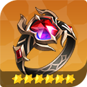 Ring of Immortality (Bất Tử) | Khi bị hạ gục, vào trạng thái Immortality trong 3 lượt (HP giữ ở 1, không chết). Không kích hoạt khi dính Souldeath; hiệu ứng có thể bị xóa bởi Buff Duration Reduction của địch. | 2 lượt / 1 lượt |
| Ring of Resurrection (Hồi Sinh) | Khi bị hạ gục, hồi sinh 1 lần với 100% HP. Không kích hoạt khi dính Souldeath. | 50% / 25% |
| 500 Days Celebration Ring (Nhẫn 500 Ngày) | Guts giống Ring of Authority, sau khi kích hoạt thì tạo Barrier bằng 55% Attack trong 2 lượt, không thể bị xóa. Vẫn kích hoạt được khi dính Souldeath — rất mạnh khi gặp hero gây HP Alteration như Freyja hoặc chuỗi kích hoạt như Lu Bu. | — |
| 1st Anniversary Celebration Ring (Nhẫn Kỷ Niệm 1 Năm) | Hồi sinh 1 lần với 35% HP. Nhẫn sự kiện — dùng tạm khi chưa có Ring of Resurrection, rồi thay bằng Resurrection 5★ khi có. | — |
Rare — tăng sát thương theo điều kiện (kích hoạt từ đầu trận)
| Nhẫn | Hiệu ứng (6★) | 5★ / 4★ | Dùng cho |
|---|---|---|---|
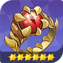 Ring of Subjugation (Chinh Phạt) | Sát thương lên Boss +12% | 8% / 4% | DPS đánh Boss: Raid, Castle Rush, Advent Expedition |
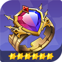 Ring of Siege (Công Thành) | Sát thương kỹ năng đánh 1–3 mục tiêu +10% | 6% / 3% | DPS đơn mục tiêu / ít mục tiêu (Shane, Jupy, Espada…) |
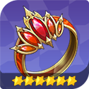 Ring of Annihilation (Hủy Diệt) | Sát thương kỹ năng đánh 4–5 mục tiêu +10% | 6% / 3% | DPS AoE, farm, PvP |
| 400 Days Celebration Ring (Nhẫn 400 Ngày) | Sát thương lên Boss +12% — giống Ring of Subjugation | — | Nhẫn sự kiện, hiệu ứng tương đương Subjugation |
Rare — tăng độ bền (Barrier / hồi máu, kích hoạt từ đầu trận)
| Nhẫn | Hiệu ứng (6★) | 5★ / 4★ | Dùng cho |
|---|---|---|---|
| Ring of Roar (Gầm Thét) | Đầu trận tạo Barrier bằng 90% Attack, kéo dài 2 lượt | 50% / 30% | Hero có Attack cao |
| Ring of Bulwark (Thành Lũy) | Đầu trận tạo Barrier bằng 100% Defense, 2 lượt | 55% / 35% | Hero có Defense cao (tank) |
| Ring of Health (Sinh Mệnh) | Đầu trận tạo Barrier bằng 18% Max HP, 2 lượt | 11% / 6% | Healer, Support, hero nhiều HP |
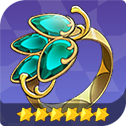 Ring of Tenacity (Bền Bỉ) | Khi HP tụt xuống ≤50%, hồi HP bằng 18% Max HP. Chỉ kích hoạt 1 lần mỗi trận, hiệu ứng được ưu tiên kích hoạt trước | 11% / 6% | Hero đã tự tạo Barrier bằng skill — đeo Tenacity thay vì nhẫn Barrier để không trùng (xem mục 05) |
| 200 Days Celebration Ring (Nhẫn 200 Ngày) | Giống Ring of Roar: Barrier 90% Attack, 2 lượt | — | Nhẫn sự kiện, hiệu ứng tương đương Roar |
| 100 Days Celebration Ring (Nhẫn 100 Ngày) | Giống Ring of Tenacity: hồi 18% Max HP khi HP ≤50% | — | Nhẫn sự kiện, hiệu ứng tương đương Tenacity |
Uncommon — khống chế / DoT / debuff (chỉ kích hoạt trên đòn đánh thường)
Nhóm này chỉ kích hoạt trên đòn đánh thường (Basic Attack) — dùng kỹ năng không kích hoạt. Vì vậy nó hợp nhất với hero đánh thường nhiều, sống lâu trên sân (đặc biệt là Support), hoặc hero có đòn phản công được tính là đòn đánh thường (ví dụ Jave).
| Nhóm | Nhẫn | Hiệu ứng (6★) | 5★ / 4★ |
|---|---|---|---|
| CC | 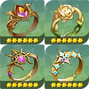 Ring of Chance — Stun | 10% gây Stun 1 lượt | 6% / 3% |
| CC | Ring of Curses — Silence | 12% gây Silence 1 lượt | 8% / 4% |
| CC | Ring of Doom — Paralysis | 10% gây Paralysis 1 lượt | 6% / 3% |
| CC | Ring of Brilliance — Shock | 10% gây Shock 1 lượt | 6% / 3% |
| CC | Ring of Horror — Blind | 12% gây Blind 1 lượt | 6% / 3% |
| CC | Ring of the Snow — Freeze | 12% gây Freeze 1 lượt | 6% / 3% |
| CC | Ring of Medusa — Petrify | 10% gây Petrify 1 lượt | 6% / 3% |
| CC | Ring of Dreams — Sleep | 12% gây Sleep 1 lượt | 6% / 3% |
| DoT | 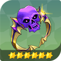 Ring of Death — Death | 6% gây Death trong 3 lượt | 4% / 2% |
| DoT | Ring of Thorns — Bleed | 15% gây Bleed trong 2 lượt | 10% / 5% |
| DoT | Ring of the Salamander — Burn | 15% gây Burn trong 2 lượt | 10% / 5% |
| DoT | Ring of the Viper — Poison | 15% gây Poison trong 2 lượt | 10% / 5% |
| Debuff | 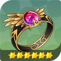 Ring of Magic — Buff Removal | 12% xóa 1 buff của địch | 8% / 4% |
| Debuff | Ring of Time — Buff Duration Reduction | 12% giảm thời lượng buff của địch đi 1 lượt | 8% / 4% |
Common — chỉ số +% đơn giản (kích hoạt từ đầu trận)
| Nhẫn | Hiệu ứng (6★) | 5★ / 4★ |
|---|---|---|
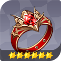 Ring of Vengeance — Damage | Sát thương +6% | 4% / 2% |
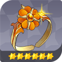 Ring of Fortune — Crit Rate | Crit Rate +10% | 6% / 3% |
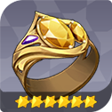 Ring of Concentration — Weakness Hit | Weakness Hit Chance +12% | 8% / 4% |
| Ring of Protection — Defense | Defense +10% | 6% / 3% |
| Nhẫn tăng Block Rate | Block Rate +10% | 6% / 3% |
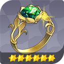 Ring of Nature — Max HP | Max HP +10% | 6% / 3% |
| Ring of Accuracy — Effect Hit Rate | Effect Hit Rate +15% | 10% / 5% |
| Ring of Resistance — Effect Resistance | Effect Resistance +15% | 10% / 5% |
Nhẫn Common không có hiệu ứng đặc biệt, nhưng đừng coi thường: một nhẫn 6★ Crit Rate +10% hoặc Weakness Hit +12% có thể là mảnh ghép cuối cùng để hero của bạn đạt ngưỡng Crit/Weakness cần thiết, trong lúc chờ nhẫn Rare/Legendary ngon hơn.
🗺️ Kiếm nhẫn ở đâu — từ cày chay tới shop
Nhẫn không mua được bằng Gold và không rơi ở Adventure thường. Nguồn chính là Nightmare Mode — vì vậy ưu tiên đầu tiên là đẩy Adventure lên Nightmare 11 càng sớm càng tốt.
Nightmare — nguồn nhẫn chính
- Nhẫn rơi ngẫu nhiên khi qua màn Nightmare. Phẩm theo khu vực: màn 1-1 trở đi rơi nhẫn 4★; màn 6-1 trở đi rơi 4–5★; màn 11-1 trở đi rơi 4–6★. Nên cày lên Nightmare 11 càng sớm càng tốt.
- Nightmare cần 2 đội (đánh 2 round), mỗi màn tốn 12 Key.
- Bảo hiểm rơi: tệ nhất tốn 1.200 Key (100 lần chạy) để chắc chắn rơi 1 nhẫn. Bảo hiểm Legendary: nếu chạy 15.000 lần không rơi nhẫn Legendary thì lần sau chắc chắn rơi.
- Pet tăng tỉ lệ rơi: pet Mole tăng tối đa 30%, Doo tăng tối đa 10% tỉ lệ rơi trang bị; 2 pet không cộng dồn, chỉ đeo 1 con. Doo lấy được qua Pet Crafting.
Shop và nội dung khác
| Nguồn | Nhẫn nhận được | Ghi chú |
|---|---|---|
| Arena Shop | Hộp 4★ Legendary Accessory Box (đổi bằng Medal of Victory) | Một trong những phần thưởng ưu tiên cao nhất trong Arena Shop. |
| Total War Shop | Hộp nhẫn thường: 4★ = 2.500 token, 5★ = 9.000, 6★ = 25.000. Hộp Legendary: 4★ = 500, 5★ = 1.250, 6★ = 2.500 High Grade Total War Token | Còn hộp 5★ = 2.500 God of Destruction Fragment. |
| Topaz Shop | Hộp 4★ Legendary Accessory Box = 10.000 Topaz | Đắt — cân nhắc thứ tự ưu tiên với đồ Seven Knights và hero Legendary. |
| Infinite Tower | Tầng 250 và 290: hộp 4★ Legendary; tầng 350: hộp 5★ Legendary | Leo tháp là nguồn nhẫn Legendary miễn phí chắc chắn có. |
| Adventurer Skill (cấp người chơi) | Lv65: hộp 4★ Legendary; Lv100: hộp 5★ Legendary; Lv120 và Lv140: hộp 6★ Legendary; Lv160: hộp CHỌN 6★ Legendary | Mốc Lv160 cho hộp chọn — được chọn đúng nhẫn mình cần. |
| Advent Expedition | Hộp Rare Accessory Box (xếp hạng theo sát thương lên God of Destruction); Guild Shop đổi được hộp 5★ Rare bằng God of Destruction | Nguồn nhẫn Rare ổn định mỗi kỳ. |
| Nhẫn thuê (Rental) | Mua ở Shop với 1.000 Ruby | Luôn hết hạn vào thứ Năm (UTC+9) bất kể ngày mua — nên mua ngay sau reset để dùng được lâu nhất. Mỗi lần thuê được 100 Loyalty Point; mốc tích lũy: 600 → hộp 4★ Legendary, 1.200 → hộp 5★ Legendary, 2.400 / 4.800 / 7.200 → hộp 6★ Legendary. |
| Adventurer's Path | Người chơi mới hoàn thành 28 giai đoạn được 2 hộp chọn 5★ Legendary; người chơi quay lại (10 giai đoạn) được 1 hộp chọn 5★ Legendary + Ancient Refinement Charm; nhiệm vụ quay lại giai đoạn 30 được hộp chọn 4★ Legendary | Nguồn nhẫn Legendary sớm nhất cho người mới. |
| Nightmare Pass (nạp) | Pass IV và V (Premium) có hộp 4★ Legendary + hộp chọn 6★ Uncommon | Chỉ dành cho người nạp. |
| Chế tạo ở Workshop | Gộp nhẫn thấp sao lên cao sao (xem mục 04) | Có giới hạn chế tạo; một số nguyên liệu cần đạt cấp cường hóa tối thiểu. |
Lộ trình gợi ý cho người mới: làm Adventurer's Path lấy 2 hộp chọn 5★ Legendary → đẩy Adventure lên Nightmare 11 để farm nhẫn → dùng Medal of Victory ở Arena Shop đổi hộp 4★ Legendary → leo Infinite Tower lấy hộp ở tầng 250/290/350. Nhẫn Legendary đầu tiên nên chọn Guts (xem mục 01) vì dùng được cho nhiều hero nhất.
⚒️ Cường hóa nhẫn và tinh luyện — 1 nhẫn, 2 hiệu ứng
Cường hóa nhẫn (Power Up) — khác với cường hóa đồ thường
- Dùng Gold, có tỉ lệ thành công. Thất bại không mất nhẫn — mỗi lần thất bại cộng thêm Correction Rate (tăng tỉ lệ thành công cho lần sau).
- Khi cường hóa thành công, mọi hiệu ứng của nhẫn đều tăng — cả chỉ số nền lẫn hiệu ứng đặc biệt. Nhẫn không có dòng phụ như vũ khí/giáp.
- Cấp tối đa theo sao: 4★ = +9, 5★ = +12, 6★ = +15.
- Có nút Enhance All để cường hóa nhiều nhẫn cùng lúc — cẩn thận tốn Gold rất nhanh.
| Cấp cường hóa | Tỉ lệ thành công |
|---|---|
| +1 / +2 | 100% |
| +3 / +4 | 90% |
| +5 / +6 | 80% |
| +7 / +8 | 70% |
| +9 / +10 | 60% |
| +11 đến +15 | 50% |
Tinh luyện nhẫn (Refine) — gắn hiệu ứng thứ 2
Vị trí: Home → Equipment Enhancement → Refine. Mỗi nhẫn chỉ gắn thêm được 1 hiệu ứng phụ duy nhất — đó chính là cặp "nhẫn chính + nhẫn phụ" mà bạn thấy trong các bảng build.
| Cách tinh luyện | Cơ chế | Khi nào dùng |
|---|---|---|
| Fixed Stat Refining (tinh luyện cố định) | Chuyển hiệu ứng đặc biệt của nhẫn nguyên liệu sang nhẫn đích, có tỉ lệ thành công. Tăng tỉ lệ bằng Refining Talisman (phần thưởng Guild War): Legendary +20%, Rare +10%, Uncommon +5%. | Khi bạn đã có đúng hiệu ứng muốn gắn và không muốn đánh bạc. |
| Random Stat Refining (tinh luyện ngẫu nhiên) | Tỉ lệ thành công 100%, nhưng hiệu ứng gắn thêm là ngẫu nhiên. | Khi nhẫn đích chưa có hiệu ứng phụ nào và bạn chấp nhận hên xui. |
| Secure Refining Talisman (bùa đảm bảo) | Đảm bảo Fixed Refining thành công 100%, dùng được cho mọi phẩm. Chế tạo bằng 240 Refining Dust, chỉ lấy được bằng chế tạo (không có ở đâu khác). | Ưu tiên dùng cho nhẫn Legendary — ví dụ gộp nhẫn chính Revive + tinh luyện Guts/Immortal cho hero đã có sẵn 1 hiệu ứng sinh tồn, để hero đó sống được nhiều lần trong 1 trận. |
Refining Dust và Extraction — 2 cơ chế đi kèm tinh luyện
- Refining Dust (bụi tinh luyện): chỉ lấy được khi Fixed Refining thất bại mà nguyên liệu là nhẫn Legendary: nhẫn 6★ Legendary = 120 bụi, 5★ = 40 bụi, 4★ = 10 bụi. Nhẫn Legendary thừa là nguồn bụi duy nhất — đừng vứt nhẫn Legendary thừa, chúng là nguyên liệu làm bùa đảm bảo.
- Extraction (tách hiệu ứng): tách hiệu ứng đã tinh luyện ra khỏi nhẫn để lấy lại thành 1 nhẫn mang hiệu ứng đó, rồi gắn sang nhẫn khác bằng Fixed Refining. Cần vật phẩm Extraction theo sao của nhẫn, chỉ đổi được ở Total War Shop. Mẹo hay dùng: tinh luyện ngẫu nhiên ra hiệu ứng ngon → tách ra → gắn cố định sang nhẫn cần.
Chế tạo nhẫn ở Workshop — gộp nhẫn thấp sao lên cao sao
| Cách chế tạo | Công thức |
|---|---|
| Cố định (chọn đúng phẩm muốn nhận) | 6★ Common = 5★ Common ×8; 5★ Common = 4★ Common ×10; 6★ Uncommon = 5★ Uncommon ×8; 5★ Uncommon = 4★ Uncommon ×10; 6★ Rare = 5★ Rare ×5; 5★ Rare = 4★ Rare ×6; 6★ Legendary = 5★ Legendary ×4; 6★ Rare Selection Box = 6★ Rare ×2; 5★ Legendary Selection Box = Producer Kim's Coupon ×1 |
| Ngẫu nhiên (hộp, rẻ hơn) | 6★ Common Box = 5★ Common ×6; 5★ Common Box = 4★ Common ×8; 6★ Uncommon Box = 5★ Uncommon ×6; 5★ Uncommon Box = 4★ Uncommon ×8; 6★ Rare Box = 5★ Rare ×4; 5★ Rare Box = 4★ Rare ×5; 6★ Legendary Box = 5★ Legendary ×3; 5★ Legendary Box = 4★ Legendary ×4 |
Chế tạo ngẫu nhiên rẻ hơn cố định (ít nguyên liệu hơn) nhưng ra nhẫn nào thì hên xui. Có giới hạn số lần chế tạo, và một số nguyên liệu cần đạt cấp cường hóa tối thiểu mới dùng để chế tạo được.
⚠️ Nhẫn trùng nội tại — lỗi đắt nhất người mới hay mắc
Quy tắc vàng: hiệu ứng nhẫn giống tên với nội tại của hero thì KHÔNG cộng dồn. Cùng 1 tên hiệu ứng (Guts, Immortality, Revive, Barrier…) thì chỉ 1 cái có tác dụng — đeo nhẫn trùng với nội tại thì hiệu ứng nhẫn coi như không tồn tại, phí mất 1 ô nhẫn quý (mỗi hero chỉ có 1 ô nhẫn). Ngược lại, hiệu ứng khác nhau thì xếp chồng được: hero có nội tại Revive + đeo nhẫn Guts + tinh luyện Immortal = sống được nhiều lần trong 1 trận.
Cách chọn nhẫn cho hero có nội tại sinh tồn: lấy cái còn thiếu, đừng lấy cái đã có. Hero đã có Revive thì đeo Guts hoặc Immortal; hero đã có Guts thì đeo Revive hoặc Immortal; hero đã có Immortality thì đeo Guts hoặc Revive. Bằng chứng rõ nhất: trong toàn bộ 124 bản build chuẩn, không có một trường hợp nào nhẫn chính hay nhẫn tinh luyện trùng với nội tại sinh tồn của chính hero đó.
Nhẫn Guts (Ring of Authority) — trùng với 8 hero có nội tại Guts
8 hero này đã tự sống sót với 1 HP khi nhận đòn chí mạng (1 lần/trận). Đeo thêm nhẫn Authority thì Guts của nhẫn không kích hoạt thêm lần nào, mất luôn cả Barrier 150% Attack đi kèm của nhẫn.
- Ace — Unwavering Command → nên đeo Revive chính + Immortal phụ.
- Branze & Bransel — Judges of Good and Evil → nên đeo Immortal chính + Weakness Hit phụ.
- Dellons — Reaper's Blessing (kèm All Damage Nullification khi Guts kích hoạt) → nên đeo Immortal chính + Revive phụ.
- Hayeon — Ascetic of the Abyss (kèm Barrier 135% MATK) → nên đeo Revive chính + Immortal phụ.
- Kyrielle — Festival of Stars (kèm Barrier 135% MATK) → nên đeo Immortal chính + Revive phụ.
- Pallanus — Commander's Strength → nên đeo Revive chính + Immortal phụ.
- Silvesta — Knight's Will (kèm Barrier 135% MATK) → nên đeo Immortal chính + Revive phụ.
- Sun Wukong — Final Clone (kèm Barrier 135% MATK) → nên đeo Revive chính + Immortal phụ.
Nhẫn Immortal (Ring of Immortality) — trùng với 7 hero có nội tại Immortality
7 hero này khi chết sẽ tự vào trạng thái bất tử 2 lượt (1 lần/trận). Đeo thêm nhẫn Immortality thì nhẫn không cho thêm lượt bất tử nào. Cả 7 đều được xếp Guts chính + Revive phụ trong bản build chuẩn.
- Bane — Overcoming Death.
- Juri — Divine Scale (kèm Follow-Up Chance Boost khi nhận Immortality).
- Kris — Soul Drain (kèm Barrier 160% PATK).
- Orkah — Business Cruelty (bất tử 3 lượt, kèm Awakening Gauge Boost).
- Reginleif — Secret of Harmony (kèm Final Judgment khi nhận Immortality).
- Sylvia — Glittering Souls.
- Teo — Crow's Eyes.


Nhẫn Revive (Ring of Resurrection) — trùng với 17 hero có nội tại tự hồi sinh
Đây là nhóm trùng đông nhất — và cũng là lỗi người mới hay mắc nhất, vì nhẫn Revive là nhẫn Legendary "ngon" nên hay đeo bừa cho hero mạnh. 17 hero này đã tự hồi sinh 1 lần/trận (tỉ lệ HP hồi lại ghi trong ngoặc): Amelia (55%), Aris (100%), Cha Hae-in (80%), Clemyth (100%), Eileene (100%), Fai (80%, kèm Barrier 135% PATK khi hồi sinh), Karin (65%), Karl Heron (80%), Lu Bu (80%), Melia (80%), Mist (80%), Rachel (80%), Rin (80%), Shinobu Kocho (100%), Sung Jinwoo (80%), Sunran (100%), Trude (80%).
Thay thế theo bản build chuẩn: Lu Bu → Guts + Immortal; Eileene → Immortal + Guts; Aris → Guts + Immortal; Sunran → Immortal + Guts; Shinobu → Guts + Immortal; Clemyth → Immortal + Guts; Karl Heron → Guts + Immortal. Riêng Fai và Rachel: nội tại Revive 80% của họ đã đủ bền nên build chuẩn cho họ đeo nhẫn sát thương Boss (Boss DMG chính) thay vì nhẫn sinh tồn.
Đừng nhầm: hồi sinh ĐỒNG ĐỘI không phải tự hồi sinh. Karin (Skill 2 Revive — hồi sinh 1 đồng minh 50% HP), Rosie (Skill 2 Holy Prayer — hồi sinh 2 đồng minh 40% HP) và Yui (Skill 2 Battle Melody — hồi sinh 2 đồng minh 35% HP) có kỹ năng hồi sinh người khác — nhẫn Revive đeo cho họ KHÔNG trùng với kỹ năng đó. Riêng Clemyth vừa có nội tại tự hồi sinh 100% vừa có kỹ năng hồi sinh đồng minh, nên nhẫn Revive vẫn trùng với cô.


Nhẫn Barrier — trùng một phần với 17 hero tự tạo Barrier
3 nhẫn Barrier (Roar / Bulwark / Health) cũng không cộng dồn với nội tại của hero, và lời khuyên chính thức là: hero nào đã có kỹ năng tạo Barrier hoặc Damage Nullification ngay đầu trận thì nên đeo Ring of Tenacity thay vì nhẫn Barrier. 17 hero có nội tại tự tạo Barrier cho bản thân: Asura, Diaochan, Elysia, Freyja, Judas, Karon, Knox, Kris, Lee Joohee, Lina, Nia, Orly, Radgrid, Velika, Yeonhee, Yoongun, Zenitsu Agatsuma.
Lưu ý: mức độ trùng của nhẫn Barrier mềm hơn nhóm Guts/Immortal/Revive, vì điều kiện kích hoạt khác nhau (nhẫn tạo khiên đầu trận; nội tại tạo khiên khi dùng skill, khi HP thấp, hoặc mỗi round). Nếu nội tại Barrier của hero kích hoạt theo điều kiện khác với nhẫn thì nhẫn Barrier đầu trận vẫn có ích để chống sốc đầu trận — không phải lúc nào cũng phí hoàn toàn. Ví dụ: Lina được xếp Bleed + Burn (không đeo nhẫn Barrier), Kris được xếp Guts + Revive, Yoongun được xếp Guts + Revive.
Trường hợp đặc biệt: Indomitable — tên khác, nhưng vẫn nên tránh
4 hero có nội tại Indomitable (chết rồi sống lại với 1 HP, không chết tiếp cho tới khi nhận đủ 8 đòn): Dongyoung, Kagura, Randgrid, Tanjiro Kamado. Indomitable khác tên với Immortality nên về mặt luật không phải trùng tên — nhưng cả 2 đều tiêu tốn "lượt chết" của hero, nên đeo nhẫn Immortal cho hero đã có Indomitable vẫn là lựa chọn kém hiệu quả so với Guts/Revive. Bản build chuẩn cũng tránh Immortal chính cho 3/4 hero này (chỉ Dongyoung là ngoại lệ). Đây là suy luận từ dữ liệu build và cơ chế, không phải quy tắc "không cộng dồn" tuyệt đối.
✅ Nhẫn không trùng: đeo cùng skill càng tốt
Không phải cứ giống là trùng. Có 2 nhóm nhẫn mà hero đã có skill cùng loại thì đeo thêm càng tốt — đây là điểm người mới hay hiểu ngược.
Nhẫn CC / DoT — hero đã có skill CC/DoT thì càng nên đeo nhẫn cùng loại
Nhẫn CC/DoT gây hiệu ứng trên đòn đánh thường, còn skill gây hiệu ứng bằng kỹ năng — 2 đường gây hiệu ứng khác nhau nên không trùng, mà là thêm 1 lần tung xúc xắc gây hiệu ứng mỗi đòn đánh. Hero đã có skill gây CC/DoT và có Effect Hit cao thì đeo nhẫn cùng loại càng hiệu quả.
- Nhẫn CC: hero có skill gây Stun (14 skill), Shock (9), Freeze (7), Silence (6), Petrify (6), Paralysis (5), Blind (3), Sleep (3). Ví dụ: Rudy có Skill 1 gây Stun 65% trong 2 lượt — đeo thêm nhẫn Stun thì đòn đánh thường của Rudy cũng có cơ hội Stun.
- Nhẫn DoT: hero có skill gây DoT (22 hero — ví dụ Fai có 4 skill gây DoT, Bai Jiao 3, Jave 3, May 3, Tanjiro 3) càng nên đeo nhẫn DoT cùng loại. Bản build chuẩn dùng DoT làm nhẫn chính cho nhiều Support: Lina, Biscuit, Orly, Chloe, Yui, Lucy đều đeo Bleed + Burn — vì Support sống lâu, đánh thường nhiều nên DoT tích lũy tốt.
- Riêng Ring of Death (6% gây Death trong 3 lượt): mạnh nhất trong team Death. Hero gây Death bằng skill: Knox (3 skill), Kris (2), Mist (2), Aquila (1), Rosie (1), Shinobu Kocho (1).
- Tỉ lệ nhẫn CC/DoT ở 6★ chỉ 10–15% nên cần Effect Hit cao để xuyên Effect Resistance của địch — nhẫn Accuracy (Effect Hit +15%) là lựa chọn tinh luyện tốt cho hero CC/DoT.
Nhẫn tăng sát thương — không bao giờ trùng nội tại
Đã rà toàn bộ hero: không có nội tại nào tăng sát thương lên Boss hay tăng sát thương theo số mục tiêu, và không có nội tại nào tên "Damage Amplification". Vì vậy nhẫn Boss DMG (Subjugation), nhẫn 1–3 mục tiêu (Siege) và nhẫn 4–5 mục tiêu (Annihilation) không bao giờ "trùng nội tại" — chỉ cần chọn đúng điều kiện: đánh Boss thì đeo Subjugation, đánh 1–3 mục tiêu thì đeo Siege, đánh 4–5 mục tiêu thì đeo Annihilation. Lưu ý: set Avenger 4 món đã cho Boss Damage +40% — nhẫn Subjugation +12% vẫn cộng thêm được vì khác nguồn, khác tên hiệu ứng, không phải trùng.
Nhẫn Buff Removal / Buff Duration Reduction — trường hợp hẹp
Ring of Magic (12% xóa 1 buff của địch trên đòn đánh thường) và Ring of Time (12% giảm thời lượng buff địch) chỉ hợp trong những tình huống cần đúng hiệu ứng đó — nên đeo cho Support. Không có nội tại hero nào trùng tên với 2 hiệu ứng này. Đừng nhầm với Ace: Ace có Debuff Removal là xóa debuff của đồng minh, khác với Buff Removal là xóa buff của địch.
Souldeath — khi nào nhẫn sinh tồn bị vô hiệu
Souldeath là hiệu ứng "chết là chết hẳn" — hero dính Souldeath thì chết sẽ không hồi sinh. Nhẫn Immortality và Resurrection không kích hoạt khi hero dính Souldeath, nhưng nhẫn Authority (Guts) vẫn kích hoạt được (nhẫn 500-Day cũng vậy). Hệ quả thực tế: gặp team có Freyja (gây HP Alteration) hoặc Lu Bu (chuỗi kích hoạt) thì nhẫn Guts/500-Day đáng giá hơn Revive/Immortal. Ngoài ra nhẫn Immortality còn có thể bị xóa bởi Buff Duration Reduction của địch. Vì vậy thứ tự ưu tiên nhẫn Legendary Guts > Revive > Immortality không chỉ là chuyện số lượt sống thêm, mà còn là chuyện nhẫn nào vẫn chạy được khi gặp khắc chế.
🎯 Trang bị riêng — nhận ở đâu, mở ô thế nào
Trang bị riêng (Dedicated Equipment) là món đồ chỉ đúng 1 hero đeo được, hiệu ứng chỉ kích hoạt khi đúng hero đó đeo. Mỗi hero giữ tối đa 2 món đồ riêng (1 tune cho PvP, 1 tune cho PvE). Đồ riêng của DPS cho chỉ số nền PATK/MATK +247, đồ riêng của Tank/Support cho DEF +153 và HP +883. Có 5 hero không có đồ riêng: Bane, Cleo, Hokin, Leo, Rahkun.
Cách nhận đồ riêng
| Cách | Chi tiết |
|---|---|
| Dedicated Equipment Summon | 80 Ruby/lượt. Đăng ký Wishlist 2 món để tăng tỉ lệ; bảo hiểm ở lượt quay thứ 100 chắc chắn ra 1 trong 2 món trong wishlist. Quay bằng Dedicated Equipment Wish Summon Voucher (từ event, gói nạp, đổi ở shop Topaz, Honor, Total War và Guild War). Quay trùng món đã có → tự đổi thành 500 Tuning Crystals. |
| Workshop — Dedicated Equipment Conversion | Dùng 4 món Legendary Common Equipment đã +15 đổi thành Dedicated Equipment Selection Box theo loại hero. Công thức: Attack — 4 kiếm Greatsword +15; Magic — 4 trượng Staff +15; Defense — 3 kiếm + 1 trượng; Support — 1 kiếm + 3 trượng; Universal — 2 kiếm + 2 trượng. Lưu ý: phải là đồ đã +15, không phải +0. |
| Raid và Ruby Farming | Đồ riêng rớt từ Ruby Farming Area 3 trở lên; Raid tầng 5–6 ra Dedicated Equipment Box (tầng 4 ra hộp Common đến Legendary Common Equipment Box). |
| Total War Shop | Dedicated Equipment Box I = 12.000 Total War Token (hộp ngẫu nhiên). Chỉ đổi khi còn thừa token sau khi lấy Brilliant Skill Enhancement Stones, và không nên đổi khi đã có gần đủ đồ riêng vì là hộp ngẫu nhiên. |
| Guild War Shop | Dedicated Equipment Selection Box = 7.000 Pendant of Glory (được chọn món mình cần — giá trị hơn hộp ngẫu nhiên). |
| Infinite Tower | Qua tầng 370 được 2 Dedicated Equipment Selection Box. |
| Adventure Nightmare | Thu đủ 27 sao Nightmare được Dedicated Equipment Box II (ngẫu nhiên đồ của hero Legendary, không có đồ hero Rare). |
| Advent Expedition | Hoàn thành toàn bộ nhiệm vụ 1 kỳ được 1 Dedicated Equipment Selection Box. |
| Event | Event như Dedicated Equipment Support Event có thể cho đồ riêng / Tuning Powder — làm nhiệm vụ trong thời gian event. |
| Hero Collab | Đồ riêng của hero Collab (Sung Jinwoo, Cha Hae-in, Yoo Jinho, Lee Joohee) không rớt và không quay được — nhận qua Mailbox nếu sở hữu hero. |
Cách mở ô đồ riêng
- Mở ô qua Ultimate Enhancement, ở tab riêng trong menu Ultimate Enhancement (khác với tab thêm ô vũ khí/giáp). Có thể làm Ultimate Enhancement thường trước, mở ô đồ riêng sau khi đã có đồ.
- Chi phí mở ô: 2 hero 6★ làm nguyên liệu. Nguyên liệu thay thế: Leah (hero chuyên dùng làm nguyên liệu Ultimate Enhancement, không vào đội được; lấy từ Welcome Check-in hoặc Topaz Shop 2.500 Topaz).
- Ultimate Enhancement thường thêm 1 ô vũ khí + 1 ô giáp cho hero 6★ (tối đa 2 ô); không thêm ô nhẫn — nhẫn vẫn chỉ 1 ô duy nhất.
- Mở ô xong dùng được ngay. Thứ tự đúng: có đồ → mở ô → đeo → cường hóa lên +15 → tune.
- Có tính năng đeo hàng loạt: Inventory → Dedicated Equipment → Batch Equip.
Cường hóa và Tuning đồ riêng (tóm tắt — chi tiết đã có ở bài trang bị)
- Cường hóa đồ riêng bằng Gold, tối đa +15, giống đồ thường; nên +15 trước rồi mới tune.
- Tuning: tại Equipment Enhancement → Tuning, dùng Tuning Crystals để gắn 4 dòng riêng; có 9 loại hiệu ứng (Damage Amplification, Crush, Resilience, Rejuvenate, All Attack %, Defense %, HP %, Effect Hit Rate, Effect Resistance), chia 3 phẩm Uncommon, Rare, Legendary, ra ngẫu nhiên; tune lại ô đã tune sẽ ghi đè hiệu ứng cũ. Có Auto-Tune (tự lặp tới khi ra đúng loại/phẩm chỉ định, có nút Auto-Stop).
- Thứ tự làm đúng: tune đủ 4 dòng cho mọi đồ riêng đang dùng trước, rồi mới chọn lọc dòng đẹp cho hero dùng nhiều nhất.
- Tuning tốt nhất theo vai trò: PvE — Damage Amplification (kể cả support PvE); PvP Attacker — Damage Amplification hoặc Crush; PvP Support — Resilience hoặc Rejuvenate; hero gây sát thương bằng hiệu ứng (Mercure, Fai, Jave) — Damage Amplification; hero gây Death/CC (Mist, Kris, Yu Shin) — Resilience.
- Tuning Crystals lấy từ: rã đồ Common (Common 15, Uncommon 20, Rare 50, Legendary 250 viên); trùng đồ riêng → 500 viên; Total War Shop 400 token = 50 viên; Guild War Shop 120 Pendant = 50 viên; Weekly Ruby Shop 150 Ruby = 50 viên; Infinite Tower từ tầng 353; Advent Expedition; Adventurer Skill Lv175/185/195 (mỗi mốc 2.000 viên, một lần); event (Tuning Powder).
- Dedicated Tuning Crystals (chỉ dùng cho 1 hero cụ thể) có hạn sử dụng — hết hạn tự đổi thành Tuning Crystals thường theo tỉ lệ 20:1. Dùng trước khi hết hạn.
🏆 Ưu tiên đồ riêng cho tướng nào trước
Đồ riêng chỉ có tác dụng khi đúng hero đó đeo, nên lấy đồ cho hero không dùng là phí Ruby, voucher và box. Thứ tự ưu tiên dưới đây dựa trên tần suất hero xuất hiện trong đội hình Guild War (162 đội), Arena (16 đội) và Total War (15 đội), cùng với gợi ý build đồ riêng thứ 2.
Thứ tự ưu tiên
- DPS chủ lực PvE (đánh Raid / Castle Rush / Advent Expedition hằng ngày): Shane, Jupy, Espada, Pascal, Bai Long, Ryan — đồ riêng của họ đều là cột A Damage Amplification / cột B All Attack %, chỉ số nền PATK/MATK +247. Damage Amplification tăng cả sát thương thường lẫn DoT, nên đồ riêng của DPS cho ra điểm số thấy ngay. Lấy trước vì dùng mỗi ngày. (Người mới có sẵn 3 DPS này từ Adventurer's Path: Shane ở Stage 5, Espada ở Stage 6, Pascal ở Stage 7.)
- Tank + Support trong đội hình chính: Evan, Rudy, Lina, Alice, Biscuit — đồ riêng cho DEF +153 / HP +883 nền, sống lâu hơn thấy rõ. Lưu ý: với hero thuần PvE như Biscuit thì chỉ cần 1 món, món thứ 2 trùng nên rã lấy Tuning Crystals.
- Trụ cột PvP (Arena / Total War / Guild War) nếu có chơi PvP: Yoongun, Sunran, Hayeon, Eileene, Aris, Clemyth, Dongyoung, Kris, Dellons, Lu Bu, Gelidus, Karl Heron, Rosie, Mist — đây là những hero xuất hiện nhiều nhất trong đội hình PvP. Đồ riêng PvP của họ thường lấy cột Crush (DPS) hoặc Resilience (support/tank).
- Đồ riêng thứ 2: chỉ build ngay cho Eileene, Sunran, Yoongun — 3 hero dùng cả PvP lẫn PvE nên đáng có 2 món tune riêng (1 PvP, 1 PvE). 18 hero khác được gợi ý "có thể build thêm khi dư tài nguyên" (Dellons, Dongyoung, Freyja, Juri, Karl Heron, Kyrielle, Lu Bu, O'Mok, Pallanus, Randgrid, Reginleif, Rin, Silvesta, Tanjiro Kamado, Teo, Trude, Vanessa, Yeonhee, Zenitsu Agatsuma). Còn lại: 1 món là đủ, món thứ 2 trùng thì rã lấy 500 Tuning Crystals.
Ví dụ cụ thể từng tướng — đồ riêng và cột nào nên lấy
Mỗi đồ riêng có 2 cột, mỗi cột 4 dòng giống nhau. Cột nào hợp thì lấy cột đó — bảng dưới ghi cột nên ưu tiên cho từng hero.
| Hero | Đồ riêng | Cột A / Cột B | Gợi ý |
|---|---|---|---|
| Shane | Shane's Crusaders Badge — PATK +247 | A: Damage Amplification / B: All Attack % | DPS PvE: lấy cột A, tune DMGAmp |
| Jupy | Jupy's Brilliant Butterfly Wings — PATK +247 | A: Damage Amplification / B: All Attack % | Như Shane |
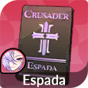 Espada | Espada's Crusaders Badge — MATK +247 | A: Damage Amplification / B: All Attack % | Như Shane (phép) |
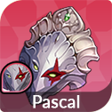 Pascal | Emperor Pascal's Mask — MATK +247 | A: Damage Amplification / B: All Attack % | Như Espada |
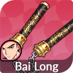 Bai Long | Bai Long's Nunchaku — PATK +247 | A: Damage Amplification / B: All Attack % | Như Shane |
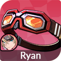 Ryan | Ryan's Combat Goggles — PATK +247 | A: Damage Amplification / B: All Attack % | Như Shane |
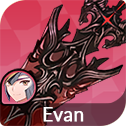 Evan | Evan's Sword of Retaliation — DEF +153, HP +883 | A: DEF% / B: Resilience | PvP: cột B Resilience; PvE tank: cột A DEF% |
| Rudy | Rudy's Torn Oath of the Seat of Light — DEF +153, HP +883 | A: Resilience / B: DEF% | PvP: cột A Resilience; tune Resilience |
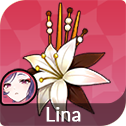 Lina | Lina's White Flower Hairpin — DEF +153, HP +883 | A: Resilience / B: HP% | PvP: Resilience; PvE: HP% |
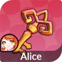 Alice | Alice's Vault Key — DEF +153, HP +883 | A: Resilience / B: HP% | Như Lina |
| Biscuit | Biscuit's Forge Hammer — DEF +153, HP +883 | A: Damage Amplification / B: DEF% | Chỉ cần 1 món PvE (DMGAmp); món thứ 2 rã lấy Crystals |
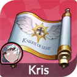 Kris | Kris's Oath of the Knight of Light — PATK +247 | A: Effect Hit / B: Effect Resistance | Gây Death cần Effect Hit (cột A); PvP thủ cần Effect Resistance (cột B) |
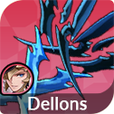 Dellons | Dellons's Infernal Dual Sword — PATK +247 | A: Crush / B: Damage Amplification | PvP: Crush; PvE: DMGAmp; đồ thứ 2 có thể build thêm |
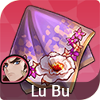 Lu Bu | Feelings for Lu Bu — PATK +247 | A: Crush / B: Damage Amplification | Như Dellons |
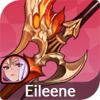 Eileene | Eileene's Rapier — PATK +247 | A: Resilience / B: Damage Amplification | Đáng build 2 món: PvP Resilience, PvE DMGAmp |
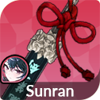 Sunran | Sunran's Black Blade — PATK +247 | A: All Attack % / B: Damage Amplification | Đáng build 2 món |
| Yoongun | Yoongun's Ivory Command Tablet — MATK +247 | A: Crush / B: Damage Amplification | Đáng build 2 món |
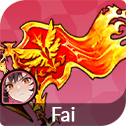 Fai | Fai's Eternally Burning Banner — PATK +247 | A: Damage Amplification / B: All Attack % | DPS Burn: DMGAmp (tăng cả sát thương Burn) |
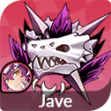 Jave | Jave's Guardian Charm — PATK +247 | A: Resilience / B: Damage Amplification | DPS Burn + phản công: DMGAmp |
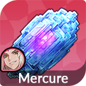 Mercure | Mercure's Dark Stone — MATK +247 | A: Damage Amplification / B: Rejuvenate | DPS hiệu ứng: DMGAmp; Rejuvenate chỉ có ở cột B của Mercure |
❓ Sai lầm thường gặp và giải đáp nhanh
Sai lầm thường gặp
- Đeo nhẫn trùng nội tại: lỗi đắt nhất ở mảng nhẫn — nhẫn Legendary trùng nội tại = mất trắng 1 ô nhẫn. Kiểm tra nội tại sinh tồn của hero trước khi đeo nhẫn Guts / Immortal / Revive (xem mục 05).
- Lấy đồ riêng cho tướng ít dùng / ghế dự bị: đồ riêng chỉ có tác dụng khi đúng hero đó đeo. Ưu tiên hero đã có đồ riêng và đang dùng trong đội hình chính.
- Mở ô rồi không có đồ để đeo: mở ô tốn 2 hero 6★ (hoặc Leah) — mở ô cho hero chưa có đồ riêng là phí nguyên liệu. Thứ tự đúng: có đồ → mở ô → đeo → +15 → tune.
- Tune lung tung tốn Crystals: tune lại ghi đè hiệu ứng cũ; nên tune đủ 4 dòng cho mọi đồ đang dùng trước, rồi mới chọn lọc dòng đẹp cho hero dùng nhiều. Đừng Auto-Tune kén chọn quá sớm khi chưa có đồ ngon.
- Giữ món đồ riêng thứ 2 cho hero chỉ chơi PvE: rã món thứ 2 lấy 500 Tuning Crystals cho hero thuần PvE như Biscuit.
- Để Dedicated Tuning Crystals hết hạn: hết hạn tự đổi 20:1 thành Crystals thường — lỗ 95% giá trị; dùng trước khi hết hạn.
- Nâng sao nhẫn thấp thay vì nhẫn sao cao: chỉ số nền nhẫn theo sao (6★ tối đa +10%, 4★ chỉ +5%) — ưu tiên sao cao hơn phẩm cao khi chỉ cần chỉ số.
Giải đáp nhanh
Một hero đeo được mấy nhẫn?
Đúng 1 nhẫn — kể cả sau Ultimate Enhancement. Tinh luyện chỉ gắn thêm 1 hiệu ứng phụ vào nhẫn đó, không phải đeo thêm 1 nhẫn nữa.
Nhẫn mở khóa khi nào?
Qua Adventure 14-50 (Unholy Tower). Mở khóa này đồng thời mở Nightmare Mode — nơi farm nhẫn chính.
Nhẫn Legendary đầu tiên nên chọn cái nào?
Guts (Ring of Authority) — dùng được cho nhiều hero nhất, lại kích hoạt được cả khi dính Souldeath. Revive hợp tank và hero nhiều HP. Immortality xếp sau vì dễ bị xóa buff.
Tinh luyện thất bại có mất nhẫn không?
Không mất nhẫn. Nhưng Fixed Refining thất bại thì mất nhẫn nguyên liệu — và chỉ khi nguyên liệu là nhẫn Legendary thì mới được Refining Dust (6★ = 120, 5★ = 40, 4★ = 10 bụi). Muốn chắc chắn thành công thì dùng Secure Refining Talisman (240 bụi).
Đồ riêng lấy ở đâu nhanh nhất cho người mới?
Quay Dedicated Equipment Summon (80 Ruby/lượt, wishlist 2 món, bảo hiểm lượt 100) và làm Adventurer's Path / leo Infinite Tower lấy Selection Box. Đồ riêng của Shane, Espada, Pascal có sẵn từ Adventurer's Path Stage 5/6/7.
Có nên mở ô đồ riêng cho hero chưa có đồ không?
Không. Mở ô tốn 2 hero 6★ (hoặc Leah). Cứ để dành nguyên liệu tới khi nào quay/chế tạo ra đồ riêng của hero đó rồi hãy mở ô.
Nhẫn CC/DoT có bị Effect Resistance của địch giảm tỉ lệ không?
Chưa có xác nhận chính thức, nhưng lời khuyên chung là dùng nhẫn CC/DoT cho hero có Effect Hit cao — Effect Hit càng cao thì hiệu ứng càng dễ xuyên qua Effect Resistance của địch.
Cùng khám phá Seven Knights Re:Birth
Theo dõi fanpage để cập nhật thêm các hướng dẫn dành cho cộng đồng.